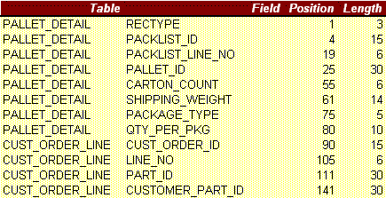
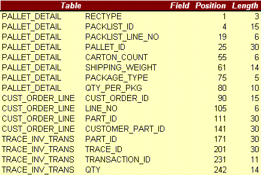
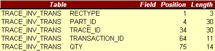

When shipping in VISUAL, you click the Part Traceability icon to assign Trace Ids to the parts you are shipping.
Your EDI Trading Partner may require you to include those Trace Ids (referred to often as either serial numbers or lot numbers) with your ASN data.
When you export your ASN Pallet Details (contained on the 5 th tab of your ASN layout), you can have VISUAL export the Trace information as well.
In order to include Trace Ids with your exported ASN data, follow the steps below:
In your ASN layout (ASN0001 is our example here) in Vmdigen, click the Data button for each tab and select the fields you will be exporting. Click Save. Repeat the step for each of the five tabs.
Associate the layout with one or more customers.
Click the fifth tab (Adt Line Item) and notice that the tables listed are: PALLET_DETAIL and CUST_ORDER_LINE.
In the blank field located above the Add button, type: TRACE_INV_TRANS and click the ADD button.
Click the Data button and your selected fields will look something like this (depending upon what fields you chose):

Now select the Trace fields so that your field selections look something like:

Click OK and Save the layout. You do NOT need to set up any joins for this table addition … these joins have all been done inside the program code itself.
When you run VMDI Exchange to export out your ASN data, the Trace Ids you assigned to your shipped parts will be exported also. However, instead of the Trace Ids being exported as part of the ASL (Additional Line Item) records, they will actually be exported as ASX (Trace) records.
So, if you were to export ASN 0001 layout using the fields selected in step 6, the Header (HDR) "H", Header Special Detail (SDL) "D", Line Item (LIN) "L", and Sub Line Item (SUB) "S" records would all export however you had selected them. The Adt Line Item (ASL)"A" would be handled differently in that the PALLET_DETAIL and CUST_ORDER_LINE fields will be exported as the "A" records and the TRACE_INV_TRANS will be exported as the (ASX) "X" records. See example below:
ASX

The six ASN files are named as follows (where ‘0001’ is the version of your layout):
ASN0001H.VDI Header (HDR records)
ASN0001D.VDI Header Special Detail (SDL records)
ASN0001L.VDI Line Item (LIN records)
ASN0001S.VDI Sub Line Item (SUB records)
ASN0001A.VDI Additional Line Item (ASL records)
ASN0001X.VDI Trace (ASX records)
Single file:
ASN0001.VDI Contains all of the above records in a single file.
|
If you are setting an EDI map in a 3rd-party mapping application, you will want to set up the ASL and ASX records as separate records. |